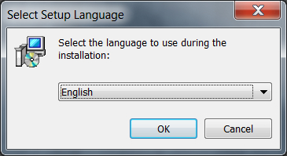
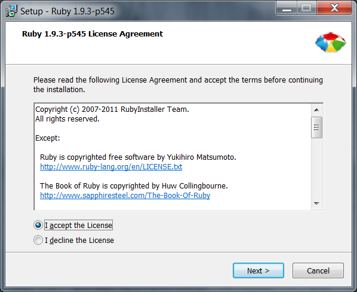
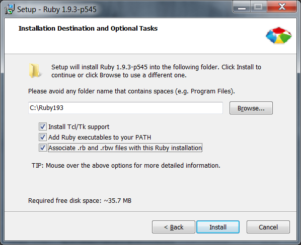
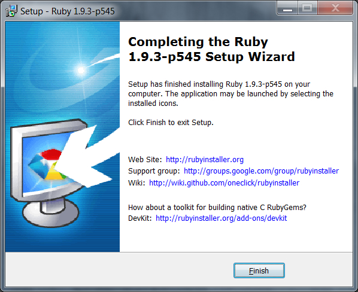

Step 3: Install Ruby
If you have Ruby installed, review the instructions for tools, gems, and scripts. Next, install Compass with step 4.
Table of Contents
Learn About Ruby
Ruby is a powerful programming language Volusion uses alongside SASS and the Compass gem for style sheets in themes. For theme development, you should install Ruby, a few applications to work with Ruby, and the Ruby Development Toolkit (for Windows).
You can learn more about Ruby through their documentation. In these instructions, the following applications will be installed for each OS:
- Windows: Ruby, Bower, Bundler, and Grunt
- Mac: Ruby, Yeoman (with Grunt and Bower) , Compass, Bundler (nice-to-have)
Of course, you can install additional applications and gems as you prefer. These are the tools used in the development and release of the Volusion responsive themes and interacting with the Theme Engine and Storefront API.
So what are these applications?
- Ruby is a flexible, dynamic open source programming language. It has multiple supportive applications and gems for creating, maintaining, compiling, and testing your CSS theme content.
- Bundler provides an environment for your Ruby projects. It tracs and installs gems as needed.
- Yeoman aids with starting projects with generated workflows and best practices. For Mac, it includes Grunt and Bower.
- Grunt is the build, preview, and test system for your project.
- Bower is a package manager for dependency management.
- Compass is a Sass-based Stylesheet Framework that streamlines the creation and maintenance of CSS.
Download Ruby
When selecting your installations, make sure to match the Ruby version with the dev kit version. The site provides guidance on the best version to install for your system. For this example set of instructions, version 1.9.3 is installed for stability of all packages (or gems). If you are on a 64 bit machine, download version 2.0.0. Optionally, you can also download the core and standard library set of documentation as needed for your efforts.
Specific information is provided for both Windows and Max OS systems.
Ruby provides a RubyInstaller for Windows as a wizard that walks through the installation process. For Mac OS X systems, you should have Ruby already installed and need to only install a few other applications. If you need Ruby for your Mac, you can use third party tools such as rbenv and RVM. For a full list of installation options, see this page and locate your choice!
 Windows Installation
Windows Installation
For Windows systems, we recommend downloading the Ruby installer and the development kit from this location. Run the file once it is downloaded. A wizard displays to walk through the installation instructions for your operating system. You can also select options for further support and development. You can mouse over each option provided. For this install, we are selecting all options. The required disk space updates based on your selections.
| Step | What to Do |
|---|---|
| 1 | Run the Ruby Installer. |
| 2 | Select your language.  |
| 3 | Read through the license agreement and click acceptance.  |
| 4 | Click Next. |
| 5 | Select the location you want to install Ruby, or use the default location provided. You can also select options for further support and development. You can mouse over each option provided. For this install, we are selecting all options. The required disk space updates based on your selections.  |
| 6 | Click Install. |
| 7 | A progress bar displays with a completion screen. Click Finish!  |
Install Ruby Development Kit
For the Ruby Development Kit, the executable extracts all content to a specified location. Part of the installation will include running commands. You may want to change the location for extraction from the default. After extracting, open a command prompt and navigate to the path for the extracted Ruby Development Kit.
| Step | What to Do |
|---|---|
| 1 | Open a command prompt. |
| 2 | CD to the location of the director you extracted the development kit. |
| 3 | Type and enter the following commands and keep your terminal open:
ruby dk.rb init ruby dk.rb install |
Install Bower, Bundler, and Grunt
Next, install a set of applications to work with Ruby. You do not need to download further files for these. These commands will install Bower, Bundler, and Grunt.
| Step | What to Do |
|---|---|
| 1 | You should still have your command prompt open. |
| 2 | Type and enter the following commands:
gem install bundler npm install -g grunt-cli bower |
 Install Ruby on Mac OS
Install Ruby on Mac OS
Typically, Ruby comes as default on your Mac OS X. These instructions walk through checking if the application is installed, installing it, and testing it worked! These instructions are completed through command line, and take only minutes.
| Step | What to Do |
|---|---|
| 1 | To test if Ruby is installed, type the following and enter: ruby -v For Mac OS X, Ruby is already installed. If you do not see a version, you can install it through Ruby Version Manager (RVM). For details, see their documentation. |
| 2 | If it is installed, you will see the Ruby version. Keep your terminal open! |
| 3 | Read through the license agreement and click acceptance. |
| 4 | Click Next. |
| 5 | Select the location you want to install Ruby, or use the default location provided. You can also select options for further support and development. You can mouse over each option provided. For this install, we are selecting all options. The required disk space updates based on your selections. |
| 6 | Click Install. |
| 7 | A progress bar displays with a completion screen. Click Finish! |
Install Yeoman
For the Ruby Development Kit, the executable extracts all content to a specified location. Part of the installation will include running commands. You may want to change the location for extraction from the default. After extracting, open a command prompt and navigate to the path for the extracted Ruby Development Kit.
| Step | What to Do |
|---|---|
| 1 | You should still have a terminal open. |
| 2 | To test if Yeoman is installed, type the following and enter: yo -v |
| 3 | If installed, it will return a version. If not, type the following and enter: sudo npm install -g yo |
| 4 | You will be prompted for your system password. After entering, Yeoman, Grunt, and Bower will install. To test if it is installed, type yo -v again. If a version displays, you are done with these apps. Keep the terminal open! |
Install Bower, Bundler, and Grunt
Next, install a set of applications to work with Ruby. You do not need to download further files for these. These commands will install Bower, Bundler, and Grunt.
| Step | What to Do |
|---|---|
| 1 | Open a command prompt, if you closed your previous prompt. |
| 2 | Check if you have compass installed. Type and enter: bundler versionIf a version displays, you are done. |
| 3 | If a version does not display, type and enter: sudo gem install bundler |
| 4 | Test the compass installation. Type and enter: bundler versionIf a version displays, you are done. |